客户服务系统首版实施｜独立虚构教学分支
状态日：2026-10-21。让项目经理专注判断、沟通与交付。
拟更新预览，尚未确认。本页基于建议候选版本生成，未覆盖原项目。请逐项审阅后再应用。
周报摘要
图内名称与验收条件采用短标签；完整原文见工作包明细与项目快照。
时间筛选仅选择相交工作包，不改写基准、预测或依赖。
截至 2026-10-21，5 / 18 个工作包记录为完成。2 个未完成工作包已超过基准结束日。
行动项
- ACT-02 协调测试阶段3人日资源缺口；负责人：项目经理；期限：2026-10-19
- ACT-03 复核80条重复键候选样本和处理记录；负责人：质量负责人；期限：2026-10-23
需要 PM 推进的决定
- DEC-01 短信初步估计增加8人日，是否纳入首版尚待评估与授权
- DEC-02 80条重复键候选的处理规则待业务负责人最终确认
过期预测，需 PM 确认
暂无记录。
依赖时间冲突
- WP141 预测开始于 2026-10-26，早于前置工作包 WP131 的结束日 2026-10-28。请 PM 评估并确认调整；未自动重排。
- WP151 预测开始于 2026-10-19，早于前置工作包 WP132 的结束日 2026-10-20。请 PM 评估并确认调整；未自动重排。
- WP152 预测开始于 2026-10-19，早于前置工作包 WP132 的结束日 2026-10-20。请 PM 评估并确认调整；未自动重排。
本次修改建议
- C08 WP132 实际完成日
原值：尚未记录
建议：2026-10-20依据 week-02：WP132的认证、重试和并发验证已经在2026-10-20完成，并有测试记录。
- C09 WP132 状态
原值：进行中
建议：已完成依据 week-02：该工作包可记为完成；这不代表WP141集成与业务验收已经完成。
- C10 ACT-01 状态
原值：待完成
建议：已完成依据 week-02：ACT-01在本次会议确认为已完成。
- C11 WP131 完成预测
原值：2026-10-11 至 2026-10-26
建议：2026-10-11 至 2026-10-28依据 week-02：预计完成日从2026-10-26调整为2026-10-28，开始日仍为2026-10-11；原批准基准完成日2026-10-20不变。
- C12 WP133 责任分配
原值：项目发起人：告知；项目经理：咨询；业务负责人：最终责任；开发负责人：执行；运维负责人：咨询；信息管理负责人：咨询；质量负责人：咨询；CRM供应商：咨询
建议：项目发起人：告知；项目经理：咨询；业务负责人：最终责任；开发负责人：执行；运维负责人：咨询；信息管理负责人：咨询；质量负责人：执行；CRM供应商：咨询依据 week-02：WP133的重复数据判定由质量负责人增加执行复核职责，业务负责人仍为最终责任人，其他角色分工不变。
- C13 ACT-03 新增行动项
建议：复核80条重复键候选样本和处理记录；负责人：质量负责人；期限：2026-10-23；状态：待完成依据 week-02：质量负责人应在2026-10-23前复核80条重复键候选的样本及处理记录。
- C14 DEC-02 新增待决事项
建议：80条重复键候选的处理规则待业务负责人最终确认；状态：待决策依据 week-02：80条重复键候选的处理规则仍待业务负责人最终确认。
- C15 WP133 完成预测
原值：2026-10-09 至 2026-10-16
建议：2026-10-09 至 2026-10-23依据 week-02：WP133处理记录预计完成日从2026-10-16调整为2026-10-23，开始日仍为2026-10-09。
工作分解｜1.1 业务与验收基准｜1 / 1
包含关系不表示依赖。短标签的完整验收原文见下方明细。


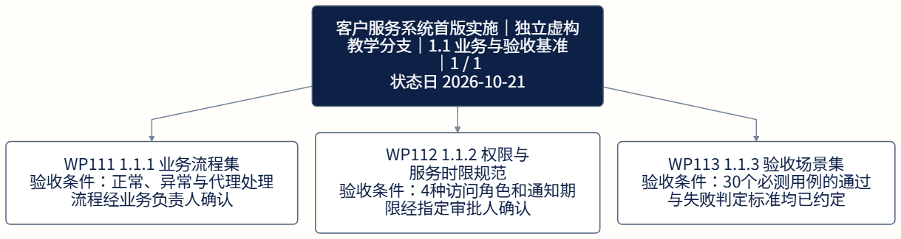
责任分配｜1.1 业务与验收基准｜1 / 1｜角色 1–8
A 最终责任 · R 执行 · C 咨询 · I 告知 · A/R 最终与执行。角色分页须合并阅读。


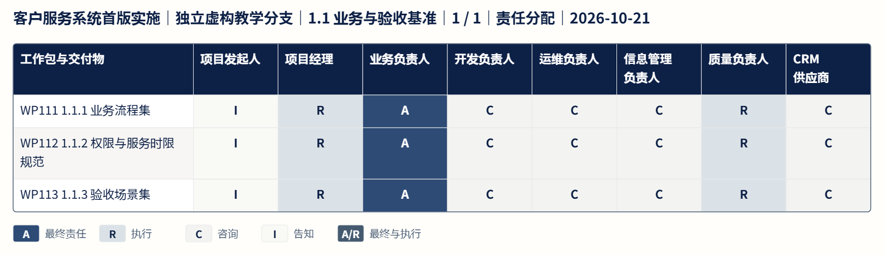
项目日程｜1.1 业务与验收基准｜1 / 1
批准基准保持不变；实际开始日未知时仅标完成日。过期预测保留原日期并提示更新。


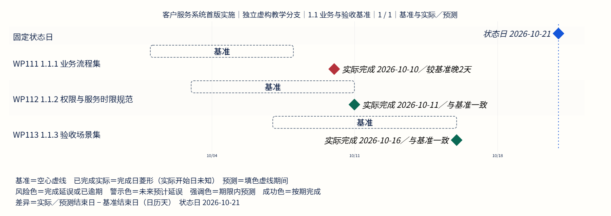
工作分解｜1.2 首版业务功能｜1 / 1
包含关系不表示依赖。短标签的完整验收原文见下方明细。


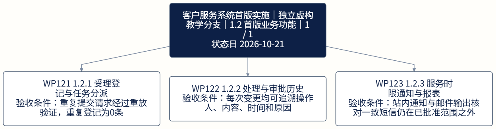
责任分配｜1.2 首版业务功能｜1 / 1｜角色 1–8
A 最终责任 · R 执行 · C 咨询 · I 告知 · A/R 最终与执行。角色分页须合并阅读。


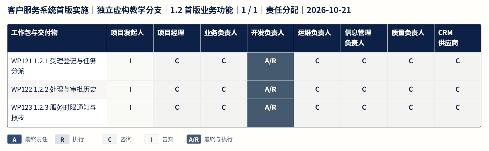
项目日程｜1.2 首版业务功能｜1 / 1
批准基准保持不变；实际开始日未知时仅标完成日。过期预测保留原日期并提示更新。


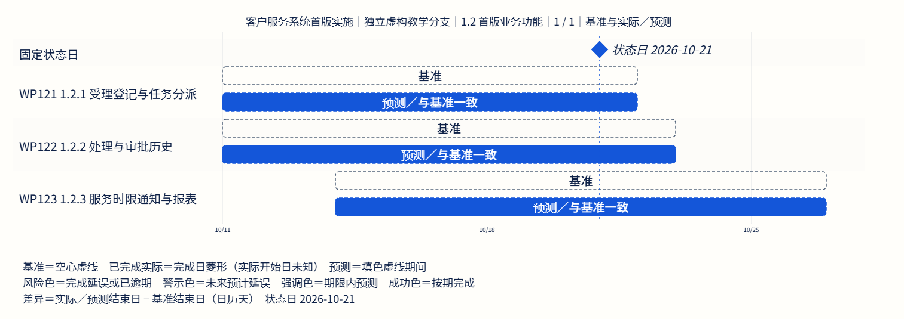
工作分解｜1.3 数据迁移与CRM集成｜1 / 1
包含关系不表示依赖。短标签的完整验收原文见下方明细。


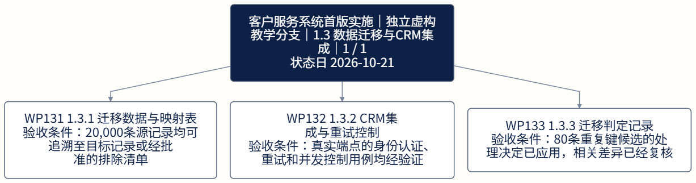
责任分配｜1.3 数据迁移与CRM集成｜1 / 1｜角色 1–8
A 最终责任 · R 执行 · C 咨询 · I 告知 · A/R 最终与执行。角色分页须合并阅读。


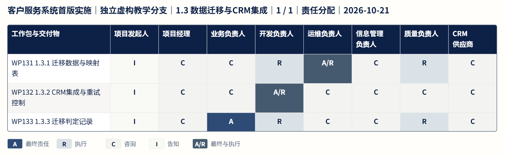
项目日程｜1.3 数据迁移与CRM集成｜1 / 1
批准基准保持不变；实际开始日未知时仅标完成日。过期预测保留原日期并提示更新。


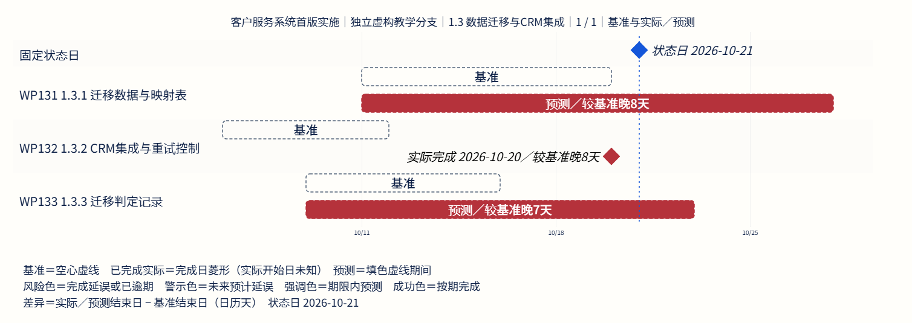
工作分解｜1.4 独立质量与安全证据｜1 / 1
包含关系不表示依赖。短标签的完整验收原文见下方明细。


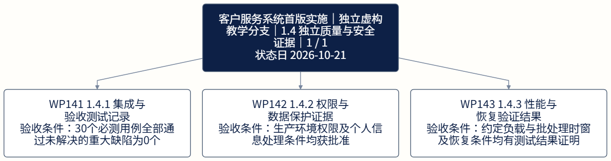
责任分配｜1.4 独立质量与安全证据｜1 / 1｜角色 1–8
A 最终责任 · R 执行 · C 咨询 · I 告知 · A/R 最终与执行。角色分页须合并阅读。


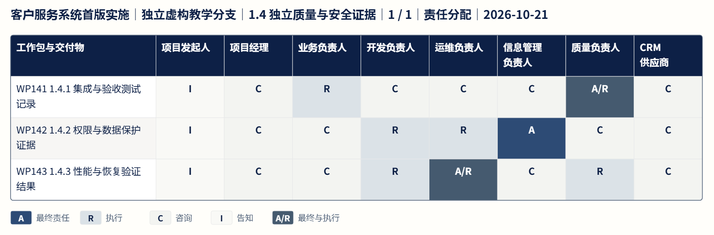
项目日程｜1.4 独立质量与安全证据｜1 / 1
批准基准保持不变；实际开始日未知时仅标完成日。过期预测保留原日期并提示更新。


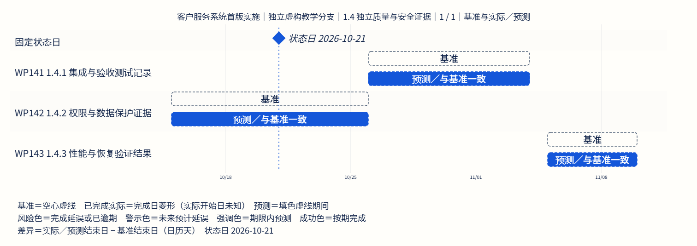
工作分解｜1.5 运维与使用准备｜1 / 1
包含关系不表示依赖。短标签的完整验收原文见下方明细。


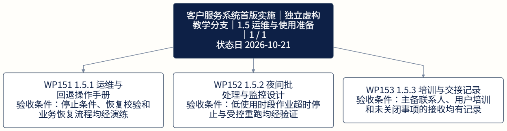
责任分配｜1.5 运维与使用准备｜1 / 1｜角色 1–8
A 最终责任 · R 执行 · C 咨询 · I 告知 · A/R 最终与执行。角色分页须合并阅读。


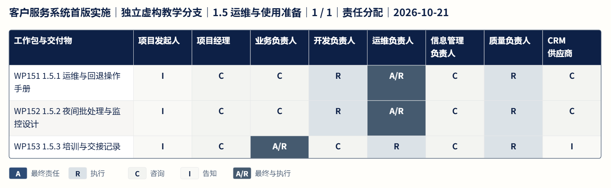
项目日程｜1.5 运维与使用准备｜1 / 1
批准基准保持不变；实际开始日未知时仅标完成日。过期预测保留原日期并提示更新。


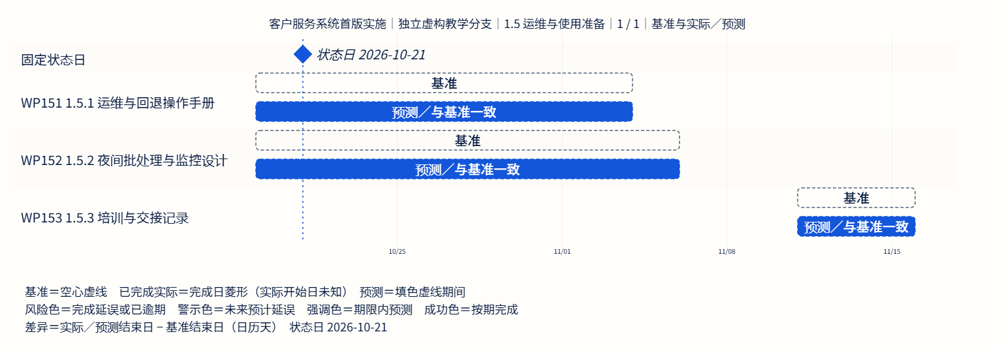
工作分解｜1.6 项目治理｜1 / 1
包含关系不表示依赖。短标签的完整验收原文见下方明细。


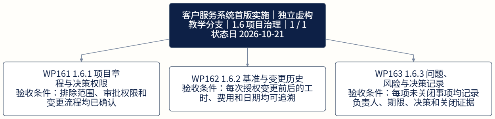
责任分配｜1.6 项目治理｜1 / 1｜角色 1–8
A 最终责任 · R 执行 · C 咨询 · I 告知 · A/R 最终与执行。角色分页须合并阅读。


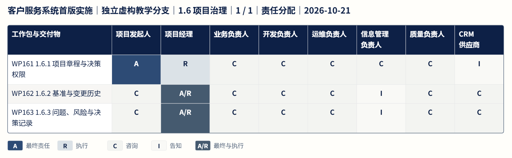
项目日程｜1.6 项目治理｜1 / 1
批准基准保持不变；实际开始日未知时仅标完成日。过期预测保留原日期并提示更新。


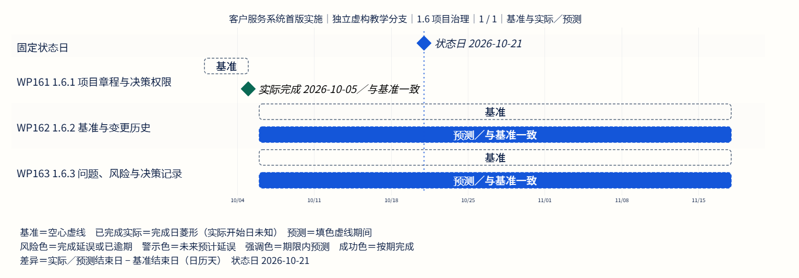
依赖关系｜1
箭头由前置工作包指向后续工作包；跨页以相同 ID 关联。


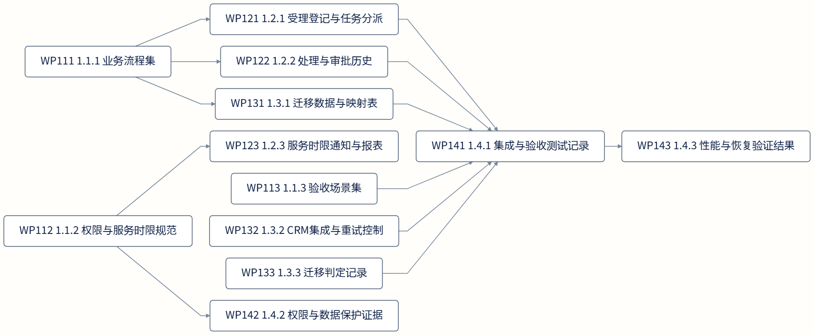
依赖关系｜2
箭头由前置工作包指向后续工作包；跨页以相同 ID 关联。


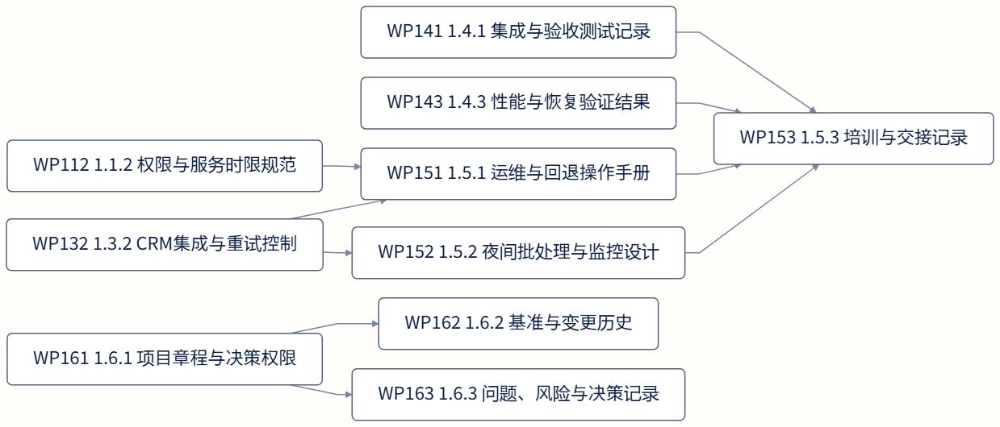
完整工作包明细
角色：sponsor 项目发起人；pm 项目经理；business 业务负责人；dev 开发负责人；ops 运维负责人；info 信息管理负责人；quality 质量负责人；vendor CRM供应商
WP111 1.1.1 业务流程集
验收条件：正常、异常与代理处理流程经业务负责人确认
前置：无；基准：2026-10-01 至 2026-10-08；预测：2026-10-01 至 2026-10-10
WP112 1.1.2 权限与服务时限规范
验收条件：4种访问角色和通知期限经指定审批人确认
前置：无；基准：2026-10-03 至 2026-10-11；预测：2026-10-03 至 2026-10-11
WP113 1.1.3 验收场景集
验收条件：30个必测用例的通过与失败判定标准均已约定
前置：无；基准：2026-10-07 至 2026-10-16；预测：2026-10-07 至 2026-10-16
WP121 1.2.1 受理登记与任务分派
验收条件：重复提交请求经过重放验证，重复登记为0条
前置：WP111；基准：2026-10-11 至 2026-10-22；预测：2026-10-11 至 2026-10-22
WP122 1.2.2 处理与审批历史
验收条件：每次变更均可追溯操作人、内容、时间和原因
前置：WP111；基准：2026-10-11 至 2026-10-23；预测：2026-10-11 至 2026-10-23
WP123 1.2.3 服务时限通知与报表
验收条件：站内通知与邮件输出核对一致短信仍在已批准范围之外
前置：WP112；基准：2026-10-14 至 2026-10-27；预测：2026-10-14 至 2026-10-27
WP131 1.3.1 迁移数据与映射表
验收条件：20,000条源记录均可追溯至目标记录或经批准的排除清单
前置：WP111；基准：2026-10-11 至 2026-10-20；预测：2026-10-11 至 2026-10-28
WP132 1.3.2 CRM集成与重试控制
验收条件：真实端点的身份认证、重试和并发控制用例均经验证
前置：无；基准：2026-10-06 至 2026-10-12；预测：2026-10-06 至 2026-10-21
WP133 1.3.3 迁移判定记录
验收条件：80条重复键候选的处理决定已应用，相关差异已经复核
前置：无；基准：2026-10-09 至 2026-10-16；预测：2026-10-09 至 2026-10-23
WP141 1.4.1 集成与验收测试记录
验收条件：30个必测用例全部通过未解决的重大缺陷为0个
前置：WP113、WP121、WP122、WP131、WP132、WP133；基准：2026-10-26 至 2026-11-04；预测：2026-10-26 至 2026-11-04
WP142 1.4.2 权限与数据保护证据
验收条件：生产环境权限及个人信息处理条件均获批准
前置：WP112；基准：2026-10-15 至 2026-10-26；预测：2026-10-15 至 2026-10-26
WP143 1.4.3 性能与恢复验证结果
验收条件：约定负载与批处理时窗及恢复条件均有测试结果证明
前置：WP141；基准：2026-11-05 至 2026-11-10；预测：2026-11-05 至 2026-11-10
WP151 1.5.1 运维与回退操作手册
验收条件：停止条件、恢复校验和业务恢复流程均经演练
前置：WP112、WP132；基准：2026-10-19 至 2026-11-04；预测：2026-10-19 至 2026-11-04
WP152 1.5.2 夜间批处理与监控设计
验收条件：低使用时段作业超时停止与受控重跑均经验证
前置：WP132；基准：2026-10-19 至 2026-11-06；预测：2026-10-19 至 2026-11-06
WP153 1.5.3 培训与交接记录
验收条件：主备联系人、用户培训和未关闭事项的接收均有记录
前置：WP141、WP143、WP151、WP152；基准：2026-11-11 至 2026-11-16；预测：2026-11-11 至 2026-11-16
WP161 1.6.1 项目章程与决策权限
验收条件：排除范围、审批权限和变更流程均已确认
前置：无；基准：2026-10-01 至 2026-10-05；预测：2026-10-01 至 2026-10-05
WP162 1.6.2 基准与变更历史
验收条件：每次授权变更前后的工时、费用和日期均可追溯
前置：WP161；基准：2026-10-06 至 2026-11-18；预测：2026-10-06 至 2026-11-18
WP163 1.6.3 问题、风险与决策记录
验收条件：每项未关闭事项均记录负责人、期限、决策和关闭证据
前置：WP161；基准：2026-10-06 至 2026-11-18；预测：2026-10-06 至 2026-11-18